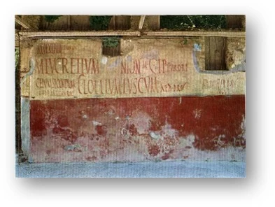
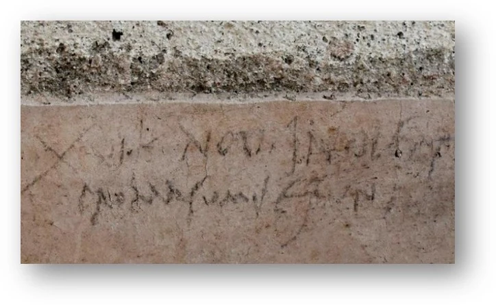
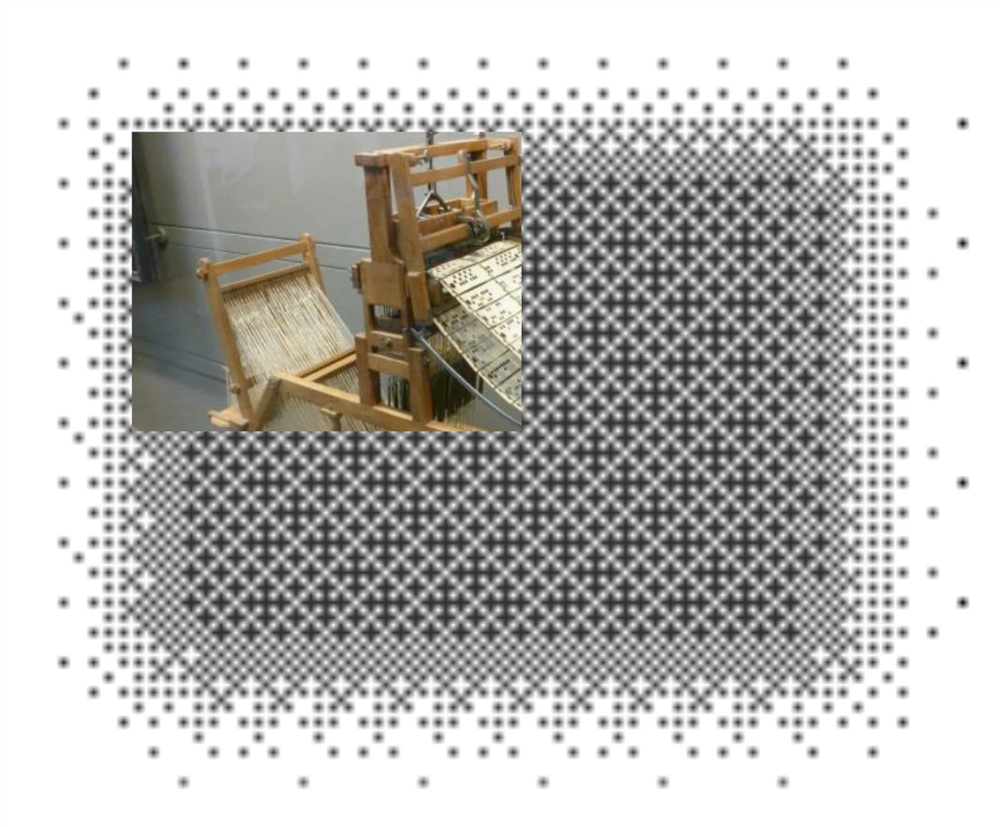
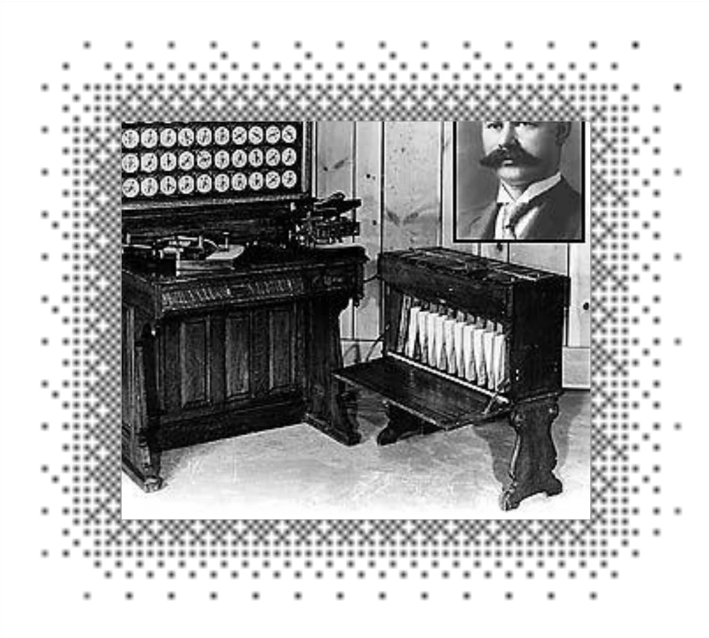
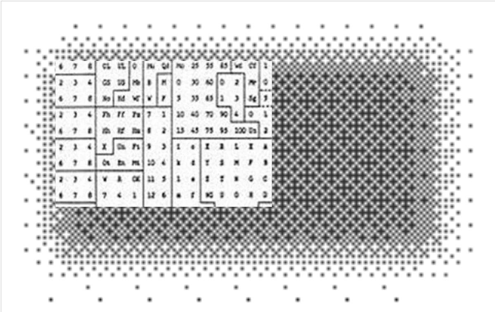
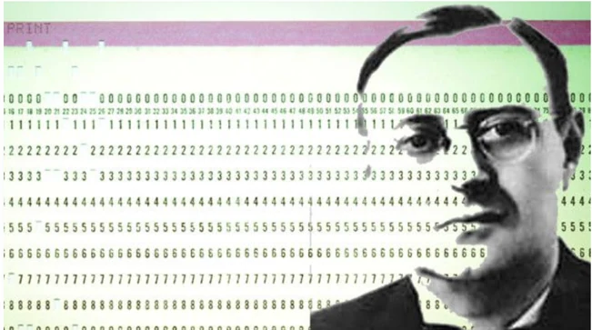

Autoridades de control · CEPD
Autoridades de control y Comité Europeo de Protección de Datos
Un recorrido desde los primeros registros de población hasta la supervisión independiente del tratamiento de datos.
Curso de protección de datos
Autoridades de control · CEPD
Un recorrido desde los primeros registros de población hasta la supervisión independiente del tratamiento de datos.
Antecedentes · tratamiento masivo
Datos antes de la informática
El censo permite separar dos ideas: los datos son antiguos; lo que cambia con la tecnología es la escala, la velocidad y la reutilización.
Publicidad · persistencia


Pompeya como analogía
La diferencia contemporánea está en la persistencia, la búsqueda, la amplificación, el perfilado y la capacidad de relacionar información dispersa.
Intimidad · expectativas sociales
¿Derecho romano?
La escena de las letrinas públicas funciona como contraste narrativo: cambia la expectativa social de intimidad y, con ella, la forma en que el Derecho protege la esfera personal.
Privacidad moderna
1890 · Warren y Brandeis
Privacidad y protección de datos están conectadas, pero no son idénticas: la protección de datos evolucionará hacia un derecho de control sobre la información que concierne a una persona.
“right to be let alone”Un antecedente intelectual de la privacidad moderna.
Acceso · control de información
1919 · Constitución de Weimar
Automatización · instrucciones codificadas
1804 · Telar de Jacquard
Las tarjetas perforadas permiten pasar de un proceso exclusivamente humano a operaciones controladas mediante una secuencia codificada.

Automatización · censo
1890 · Censo de Estados Unidos
La tecnología transforma la capacidad administrativa para clasificar y analizar poblaciones.
datos individuales
codificación física
lectura mecánica
análisis a escala


Datos · poder · derechos fundamentales
1933 · Censo alemán
El problema no es solo la exactitud técnica: importa quién trata la información, con qué finalidad y con qué efectos.
Dimensión ética · cierre del bloque

Tratamientos automatizados y responsabilidad
El caso de René Carmille permite cerrar el bloque histórico con una idea ética: los sistemas pueden identificar, localizar y clasificar, pero las decisiones humanas determinan para qué se emplean.
1890–2026 · mapa del bloque normativo
Cronología normativa de la protección de datos
La evolución no ocurre de golpe: primero se protege la vida privada, después aparecen leyes específicas y, finalmente, un sistema europeo de derechos, autoridades y cooperación.
1890–1948
1890Warren y Brandeis · privacidad moderna
1948DUDH, art. 12 · protección de la vida privada
La esfera personal entra en el ámbito de los derechos.
1970–1984
1970–84Primeras leyes nacionales de protección de datos
1978Constitución española · art. 18.4
1981Convenio 108 · marco internacional vinculante
La protección de datos adquiere reglas propias.
1990–2009
1990/91Schengen · cooperación e intercambio de información
1992–99LORTAD → Directiva 95/46 → LOPD
2000/09Carta UE, art. 8 · derecho autónomo
Consolidación en España y en la Unión Europea.
2016–2026
2016RGPD + paquete europeo de 2016
2017–18Estándares iberoamericanos + LOPDGDD
2026Convenio 108+ · 34/38 ratificaciones
Supervisión y cooperación pasan al centro del sistema.
1948 · dignidad y vida privada
Primer gran referente internacional
Todavía no se habla de protección de datos como derecho autónomo, pero sí del núcleo del problema: qué límites debe tener el poder para entrometerse en la esfera personal.
1978 · límite constitucional
Constitución Española
La Constitución no enumera todavía un sistema completo de protección de datos, pero sí ordena limitar el uso de la informática para garantizar el honor, la intimidad personal y familiar y el pleno ejercicio de los derechos.
...para garantizar el honor y la intimidad personal y familiar de los ciudadanos y el pleno ejercicio de sus derechos.
1981 · primer tratado internacional
Salto internacional
Con él la discusión deja de ser solo nacional: aparecen reglas comunes y una lógica de cooperación para un problema que ya desborda las fronteras estatales.
Permite formular estándares compartidos.
Anticipa la dimensión transfronteriza de los flujos de datos.
1990 · cooperación y circulación
Schengen y tratamiento de datos
El Acuerdo de Schengen es importante en el curso porque muestra cómo movilidad, seguridad y datos empiezan a entrelazarse institucionalmente.
1992–1999 · consolidación española y europea
LORTAD, Directiva 95/46 y LOPD
La secuencia ayuda a entender por qué la protección de datos deja de ser un conjunto de soluciones aisladas y empieza a organizarse con categorías, principios y autoridades estables.
Primera gran ley orgánica española sobre tratamiento automatizado.
Armoniza y da un marco común a la Unión Europea.
Adapta y consolida el sistema español.
2000 / 2009 · autonomía del derecho
Artículo 8
Es un paso decisivo: ya no se trata solo de privacidad o intimidad, sino de un derecho autónomo con contenido, principios y garantías específicas.
2016 · nuevo paquete europeo
No solo RGPD
El RGPD es la pieza más conocida, pero convive con otras normas relevantes para cooperación policial, PNR o Europol.
Régimen general para el tratamiento de datos personales.
Ámbito penal y cooperación policial.
Datos PNR para pasajeros aéreos.
Marco de funcionamiento y tratamiento de datos en Europol.
2017 · convergencia iberoamericana
Red Iberoamericana
No sustituyen a cada ordenamiento nacional, pero ayudan a compartir principios, lenguaje y expectativas regulatorias en el espacio iberoamericano.
Permiten convergencia normativa.
Refuerzan el diálogo entre autoridades y sistemas.
2018–2026 · modernización en curso
Convenio 108 modernizado
La modernización refuerza principios, transparencia y circulación internacional de datos. Según el guion, en octubre de 2026 todavía faltan ratificaciones para su entrada en vigor.